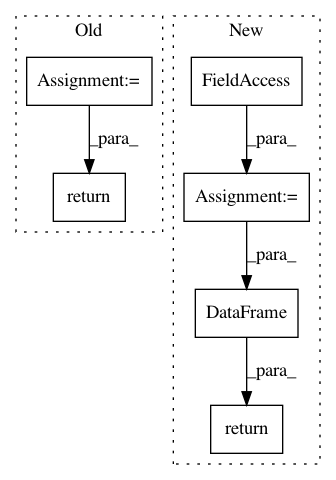

938e9716faa50db5695d937cae0b30d2cdbfd07c,conceptnet5/vectors/transforms.py,,l1_normalize_columns,#,57
Before Change
each column"s entries add up to 1. This is particularly helpful when
post-processing GloVe output.
col_norms = np.sum(np.abs(frame), axis="rows")
return frame.div(col_norms, axis="columns")
def l2_normalize_rows(frame, offset=0.):
After Change
each column"s entries add up to 1. This is particularly helpful when
post-processing GloVe output.
index = frame.index
return pd.DataFrame(data=normalize(frame, norm="l1", copy=False, axis=0), index=index)
def l2_normalize_rows(frame):
In pattern: SUPERPATTERN
Frequency: 3
Non-data size: 6
Instances
Project Name: commonsense/conceptnet5
Commit Name: 938e9716faa50db5695d937cae0b30d2cdbfd07c
Time: 2017-09-11
Author: joanna.teresa.duda@gmail.com
File Name: conceptnet5/vectors/transforms.py
Class Name:
Method Name: l1_normalize_columns
Project Name: cesium-ml/cesium
Commit Name: 2ab1119596b420cc696a783271d617562ccf7e28
Time: 2017-03-29
Author: brettnaul@gmail.com
File Name: cesium/tests/fixtures.py
Class Name:
Method Name: sample_featureset
Project Name: commonsense/conceptnet5
Commit Name: 938e9716faa50db5695d937cae0b30d2cdbfd07c
Time: 2017-09-11
Author: joanna.teresa.duda@gmail.com
File Name: conceptnet5/vectors/transforms.py
Class Name:
Method Name: l2_normalize_rows